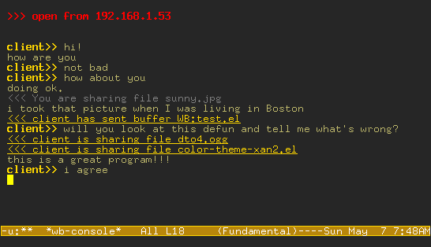

whiteboard
About
Whiteboard is an experimental toy for GNU Emacs. It allows two remote emacs users to:
- chat (similar to IRC)
- share files via rsync
- share buffers for taking notes or developing code snippets. this is like having a private lisppaste server.
More features are planned. Please keep in mind, at this stage Whiteboard is an immature and experimental program. There are known bugs. Use at your own risk.
Screenshot

Download
Tasks
TODO Fix wb-message-remain falling below 0 on long messages
TODO Don't give silly errors when killing process already dead in wb-terminate
DONE Also show messages in echo area
TODO Fix "nil has parted"
TODO Implement buffer to collect all buttons and URLs from session
- extra optional arg to wb-console-insert, makes it reflect to log buffer
TODO Implement line breaking like auto-fill-mode, with (window-width)
DONE Use asynchronous process to download files
TODO Clean up and refactor code
TODO Split into 3 clean parts: networking, console, whiteboard
TODO Keybindings for share file/share buffer
TODO Don't pop up buffers
TODO Prompt for client input
TODO Write an automatic "dired-share-file"
TODO Somehow highlight changes in wb buffer
DONE Multiuser capability
DONE Terminate properly when wb-terminate on server
DONE Notify all nodes when users join/depart
DONE Write user management functions
DONE Alter wb-message to send to everyone in case of server
DONE Alter file sharing to include IP of sharer in each request
DONE Alter all message sends to be more self-contained
DONE Alter wb-execute-plist to respond to new messages
DONE Write wb-reflect
DONE Alter wb-message to broadcast in case of server